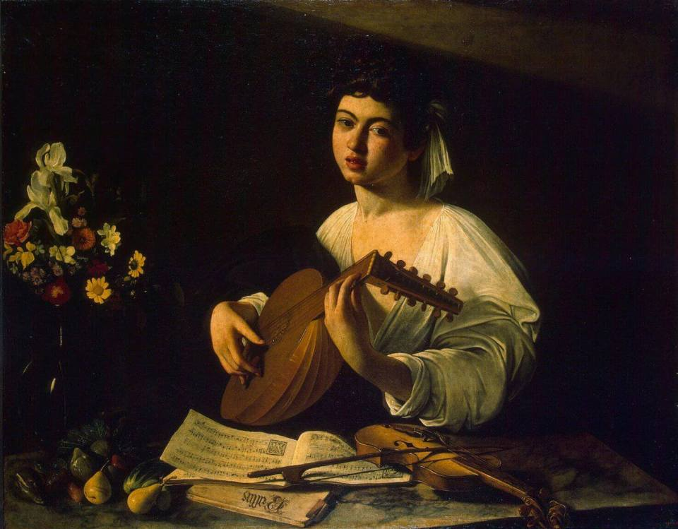

Караваджо
Лютнист
Молодой Караваджо заметил, что картины с такими юношами пользуются успехом у
некоторых представителей католической церкви. Поэтому он охотно их писал.
Но вскоре он отказался от подобных сюжетов. Все чаще изображал трагичные библейские истории. Поцелуй Иуды. Успение
Марии. Положение во гроб.
Караваджо часто называли натуралистом. За его необычную проработку деталей. Подпорченные фрукты. Трещины на лютне.
Потертые ноты.
В «Лютнисте» Караваджо впервые использует своё знаменитое тенебросо. Когда фигуры и предметы выхватываются тусклым
лучом из кромешной темноты.
Так проявляется почти осязаемый объём. А эмоции персонажа приобретают драматический оттенок. Такой театральный
эффект станет очень популярным в эпоху Барокко.